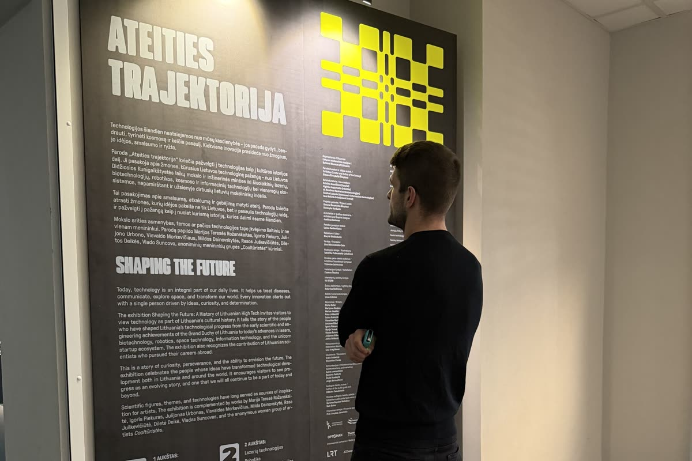

Kris Vas · laiškas tėvams · #01 · 2026-09
Ar žinai, apie ką svajoja tavo vaikas?
Tas pats laiškas, tik balsu. Skaito mano balso klonas (ElevenLabs), ne aš pats. 4 minutės.
🎧 Klausyk
⚗️ Eksperimentas: dirbtinis balsas gali suklysti tardamas vardą ar kirtį. Jei kas skambėjo keistai, parašyk man.
LNM „Ateities trajektorija", Istorijų namai, Vilnius · 2026-09-13 · nuotrauka mano
🎬 Muziejus, kur vaikui yra ką veikti
Trumpas video iš to paties apsilankymo: robotai šoka, testas „koks tu kūrėjas", lazeriai. Paroda veikia iki 2027 m. birželio, lnm.lt. Su muziejumi verslo ryšių neturiu; sąžiningumo dėlei: parodos 2010-ųjų panelyje paminėta ir Robotikos akademija, kurios bendraįkūrėjas esu.
Balsas video: tas pats klonas · 47 s · ⚠️ dar be autoriaus ausies patikros
Tekstas
Labas. Čia Kristijonas — tiksliau, mano balso klonas. Skaitau pirmą laišką tėvams. Tema: ar žinai, apie ką svajoja tavo vaikas?
Iki vienuolikos metų nemokėjau normaliai skaityti puslapio. Mokykla mane tyliai nurašė. Išgelbėjo Lego robotas — jo nereikėjo skaityti, jį reikėjo statyti.
Šios savaitės klausimas trumpas: ar žinai, apie ką svajoja tavo vaikas? Ne kas jam sekasi. Kas jam patinka.
Tėvystę tyrinėja nuo septintojo dešimtmečio, ir išvada per tiek metų nepasikeitė: reikalauk daug ir būk šalia, tada vaikas auga geriausiai. Keturi kampai, atpažink savo:
Aukšti standartai plius aukšta globa: „Tikiu tavimi, todėl reikalauju." Vaikas auga. Aukšti standartai plius žema globa: „Reikalauju, bet tavęs nematau." Vaikas bijo klysti. Žemi standartai plius aukšta globa: „Myliu, todėl padarysiu už tave." Vaikas neišmoksta ištverti. Žemi standartai plius žema globa: vaikas auga vienas.
Trumpai: reikalauk daug ir būk šalia. Abu kartu. Ir „būti šalia" nereiškia žinoti visus jo pažymius. Reiškia žinoti, ką jis myli.
Julie Lythcott-Haims, dešimt metų Stanfordo pirmakursių dekanė, pasakė taip: „Mano darbas ne padaryti juos tokius, kokius norėčiau matyti, o padėti jiems tapti savimi.“
Gillian Lynne, aštuonerių, nemokėjo nusėdėti vietoje. Mokykla parašė tėvams: mokymosi sutrikimas. Gydytojas išklausė, įjungė radiją ir išėjo su mama iš kabineto. Pro duris jie matė: mergaitė šoka. „Ji ne serga. Ji šokėja." Mama nuvedė ją į šokių mokyklą. Gillian vėliau sukūrė „Cats" choreografiją. Šiandien jai tikriausiai būtų nustatytas ADHD. Viena kitam netrukdo: ir diagnozė, ir šokių mokykla gali būti tiesa.
Vienas suaugęs pamatė, ką vaikas myli. Viena mama pakeitė aplinką. Tiek.
Trys žingsniai šiai savaitei. Be pinigų, be naujo būrelio, tik dėmesys.
Pirma. Paklausk prie vakarienės. „Jei rytoj vienai dienai galėtum būti bet kuo, kuo būtum?" Užsirašyk atsakymą, jis grįš.
Antra. Pažiūrėk su vaiku dokumentinį filmą apie tą pasaulį, be telefonų. Po filmo vienas klausimas: „Ką jis turėjo išmokti, kad tai darytų?"
Trečia. Nuvesk ten, kur ta svajonė gyva. Muziejus, koncertas, varžybos. Tikras žmogus, kuris tai daro kasdien, trumpiausiai parodo kelią. Praeitą savaitę pats nuėjau į Nacionalinį muziejų Vilniuje, į parodą „Ateities trajektorija": robotai šoka, testas „koks tu kūrėjas", lazeriai, kuriuos Lietuvoje darė dar prieš man gimstant. Vaikui ten yra ką veikti. Nuotrauka laiške iš ten, o trumpas video yra šiame puslapyje, po garso įrašu.
Tik tada — būrelis. Renkis pagal tai, kas išlindo per tris žingsnius, ne pagal madą.
Esu Robotikos Akademijos, BrAIn Club ir ExoClass bendraįkūrėjas — jei reikia pagalbos renkantis bet kurį būrelį, ne tik mano, tiesiog atrašyk.
Apie ką svajoja tavo vaikas? Vienu sakiniu. Skaitau viską.
Saugok save. Kitą kartą kalbėsim apie tai, kas yra „skaitmeninių technologijų vairuotojo pažymėjimas" ir kaip padaryti, kad ekranas dirbtų vaikui, o ne vaikas ekranui. Nuo trečio laiško pridėsiu ir trumpus video.
Laiške dar radau tau tris filmus, tris knygas ir tris tekstus šia tema, su mano vertinimais. Nuorodos laiške.
Post scriptum. Šį laišką rašiau su disleksija ir su AI padėjėju, o balsu jį skaito mano balso klonas, ne aš pats. Radai klaidą? Sakyk, taisau. Viską, ką statau tėvams (testą, žemėlapį, balso asistentą), dedu į vieną vietą ir pildau kas savaitę: krisvas punktas el tė.
Atsakymas į laišką ateina tiesiai man. Skaitau kiekvieną.
Atrašyk man →⚗️ Šį puslapį ir laišką kūriau su dirbtiniu intelektu; jis gali klysti. Esu Robotikos Akademijos, BrAIn Club ir ExoClass bendraįkūrėjas, todėl konkrečių būrelių čia nerekomenduoju. Daugiau: krisvas.lt